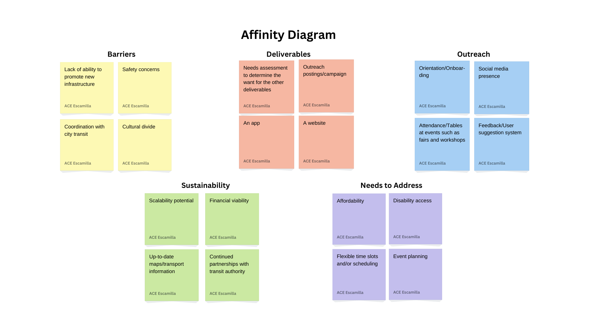

Problem Statement

There is not enough attention being placed on the lack or availability of public transportation to University of South Carolina students who may need it.
Affinity Diagram
Above is an affinity diagram created for the sake of developing a solution to my problem statement. It includes a section for outreach, sustainability, needs, barriers, and deliverables, all of which then have snippets of possibilities pertaining to their headings.